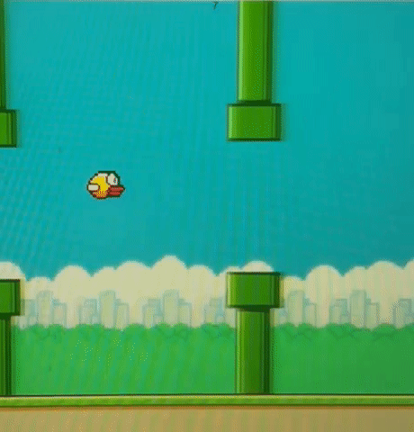
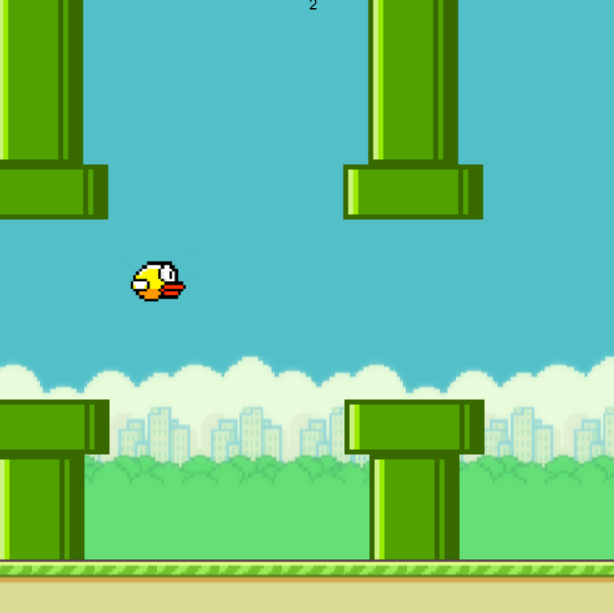
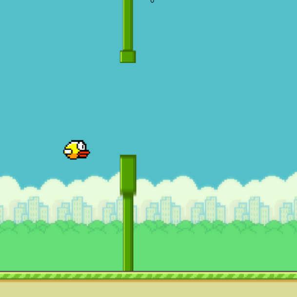

For MP3, I decided to recreate Dong Nguyen's Flappy Bird game.
Here is a gif of the final game in action:

In order to run my game, you can simply open the Flappy Bird Game from the link and play the game directly. Alternatively, you could download the code from my GitHub Respository and run it from your local server.
I broke this project up into several steps to complete it:
An issue I ran into during MP3 was scaling the pipes properly. When I had set up
the obstacles to be green rectangles, they scaled fine because I could simply make the
rectangle longer with no issue:
However, when I loaded in images of the pipes to replace the obstacles, it stopped
producing the randomized gaps in between the pipes:

Then when I tried to resize the pipes, it started stretching them out, significantly
distorting them:

To solve this issue, rather than randomly resizing the length of the pipes, I randomly
repositioned their y position to avoid distorting them. This finally solved the issue:
Here are some ideas and features I might like to add to my project in the future:
Here are some resources I found useful while working on this project: